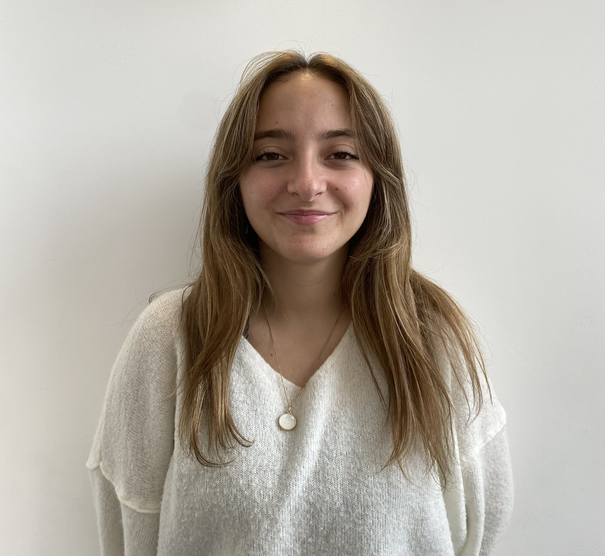

Hi 👋👋
I'm a eighteen years old who studies business at IESEG School of Management. I love reading, hanging out with my friends, travelling, watching tv shows/movies and listening to music. I also love learning new things, for example, learning a new langage or learning how to code a website!!
The thing I enjoy the most in life is music, preferrably live. I enjoy all types of it, but I still have a soft spot for rock and pop folk. I love music because it allows me to do so many different things. Firsty, it helps me escape my daily life. Secondly, it's super helpful to help me focus while I'm studying. Finally, it makes time flies which can be great. I truly don't think I could live without it. Even tho I love listening to music, I'm not a good instrument player.
I absolutely love the world of tv shows and cinema. My favorite shows are Prodigal Son, The Vampire Diaries and Bridgerton. I'm also really passionate about the older Marvel movies and their iconic characters. I love these because they allow me to escape, dream, imagine and think about something else than my life. They're like my sanctuary.
I've travelled a lot thanks to my parents, and my favorite trip ever was to Tanzania. It was absolutely gorgeous and out of this world. We did three safaris an saw the big five (a lion, an elephant, a leopard, a rhino and a buffalhe)! The landscapes were to die for. The people we met were also the kindest and purest souls. They taught us so much about interacting with people, sharing and appreciating the world around us. Our tour guide was really interesting and his life story was inspiring, we still talk to him yearly. We went to to Zanzibar right after which was also great.